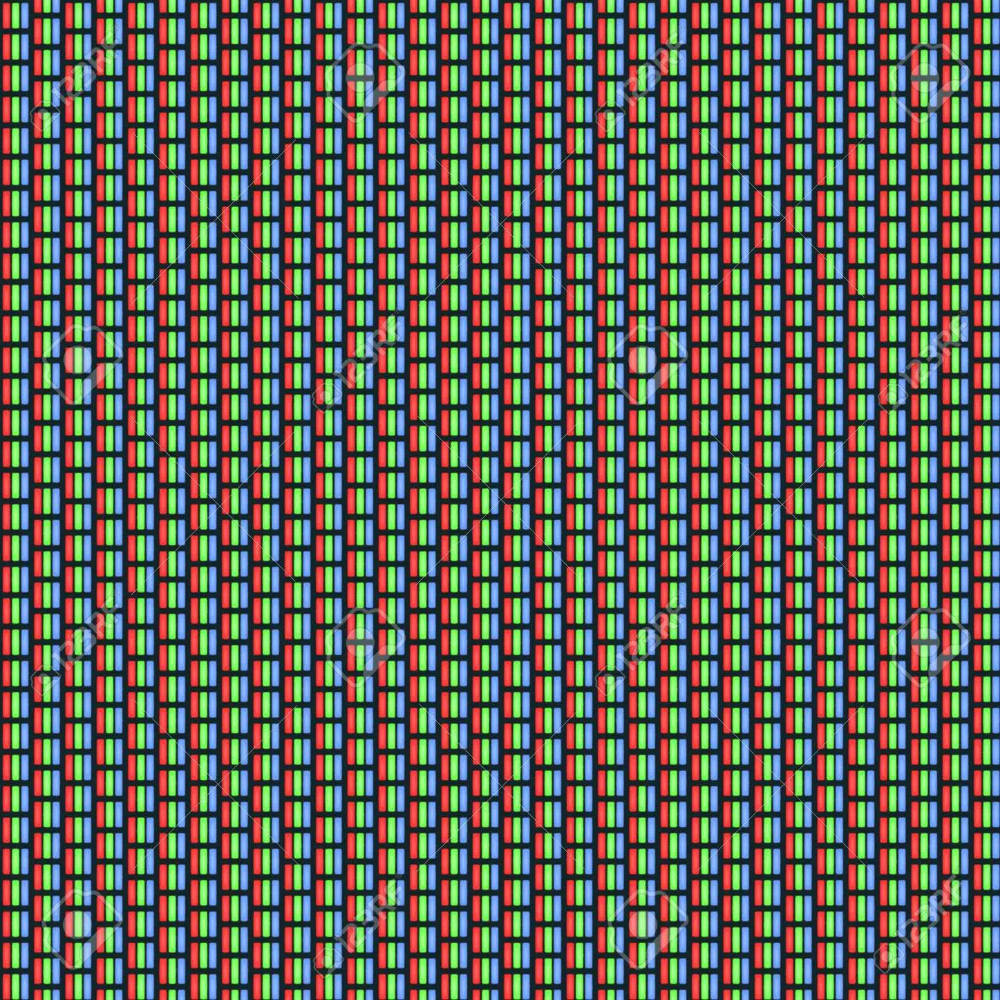

RGB
RGB is de afkorting voor de primaire kleuren: rood, groen en blauw.
RGB komt voor op al je beeldschermen.
De basis van dit model is kleurloos en de kleuren worden gevormd wanneer er
licht aan toe wordt gevoegd. Om die reden is een beeldscherm dat uitstaat zwart.
CDD
De camera van je beeldscherm, bijvoorbeeld van je telefoon bestaan uit lenzen.
Achter deze lenzen zitten beeldsensor, ook wel CDD genoemd.
Deze sensor bestaat uit miljoenen lichtgevoelige fotocellen.
Als jij een foto maakt met je telefoon wordt er een momentopname gemaakt van
al het invallende licht. De sensoren zetten dit om in een elektrisch signaal.
Pixels
Als je de foto die je hebt gemaak ver inzoomt zie je dat de foto bestaat uit pixels,
dat zijn vierkante blokjes met een bepaalde kleur. Iedere pixel bestaat uit 3 lampjes,
doordat je de lampjes harder of zwakker kunt laten branden, kunnen er verschillende
kleuren weergeven worden op het beeldscherm. Door de kleuren van het kleurmodel
te mengen ontstaan er nieuwe kleuren.

Afdrukken op wit papier
Omdat een RGB is afgesteld op een zwarte achtergrond, gaat het fout
als je iets wilt afdrukken op een wit papier. Hiervoor is een speciaal
ander kleur model, hier worden kleuren toegevoegd aan een witte achtergrond.